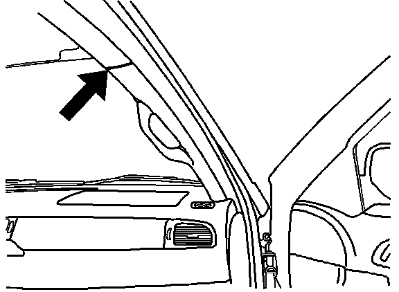

Body - Water Leak Diagnostic Guide
Bulletin No.: 06-08-57-001ADate: March 13, 2007
TECHNICAL
Subject:
General Waterleak Diagnostic Guide
Models:
2007 Cadillac Escalade, Escalade ESV, Escalade EXT
2007 Chevrolet Avalanche, Suburban, Tahoe
2007 GMC Yukon, Yukon XL
Supercede:
This bulletin is being revised to add waterleak diagnostic information. Please discard Corporate Bulletin Number 06-08-57-001 (Section 08 - Body & Accessories).
Condition
Front floor wet at the base of the "A" pillar. Refer to the illustration above.
Cause
The park brake cable grommet may not be sealing to the floor pan due to some lumps in the body sealer. Refer to the illustration above.
Correction
Lift up on the lip of the grommet and level out the body sealer. Using a garden hose, run water on the engine compartment side of the dash ensuring that water hits the grommet. Afterwards, run water onto the center of the cowl screen between the windshield wipers at the base of the windshield in order to verify that the leak has been corrected.
Condition
Front floor wet at the base of the "A" pillar. Refer to the illustration above.
Cause
Remove the cowl screen and using a flashlight look through the opening in the top of the plenum for sealer voids in the fore aft seam between the cowl side and plenum lower. Refer to the illustration above.
Correction
After finding the fore and aft seam, apply seam sealer where voids are noted. Run water over this seam in order to verify that the leak has been sealed.
Condition
Front floor wet at the base of the "A" pillar. Refer to the illustration above.
Cause
Remove the fender and inspect the lower cowl area for a void in the sealant as seen in the illustration above.
Correction
Clear the area and reseal with seam seal. Allow dry time. Run water over this seam in order to verify that the leak has been sealed.
Condition

Customer comments about moisture between the top of the A pillar trim and the headliner. Refer to the illustration above.
Cause
The first item to inspect for is a possible sealer void in the roof ditch molding. Refer to the illustration above.
Correction
Run water over the front of the rubber roof ditch molding. If water leaks at the location the customer described, remove the rubber ditch molding and look for a sealer void between the roof ditch sealer melt strip and the sealer patch. Refer to the illustration above.

Disclaimer